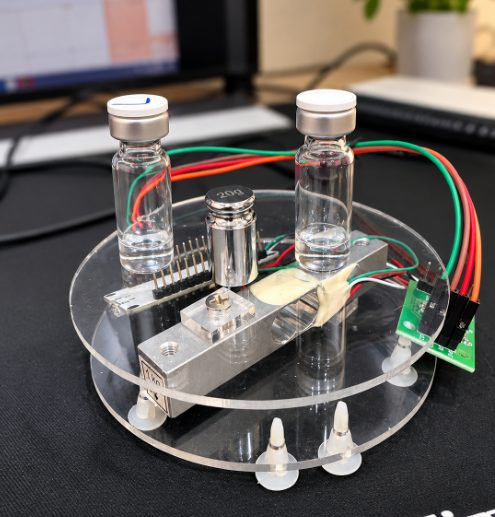
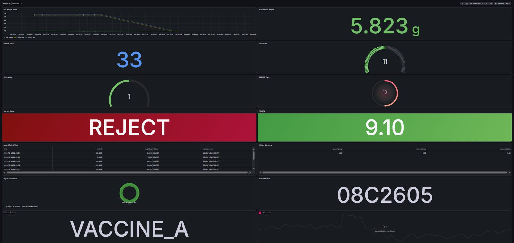
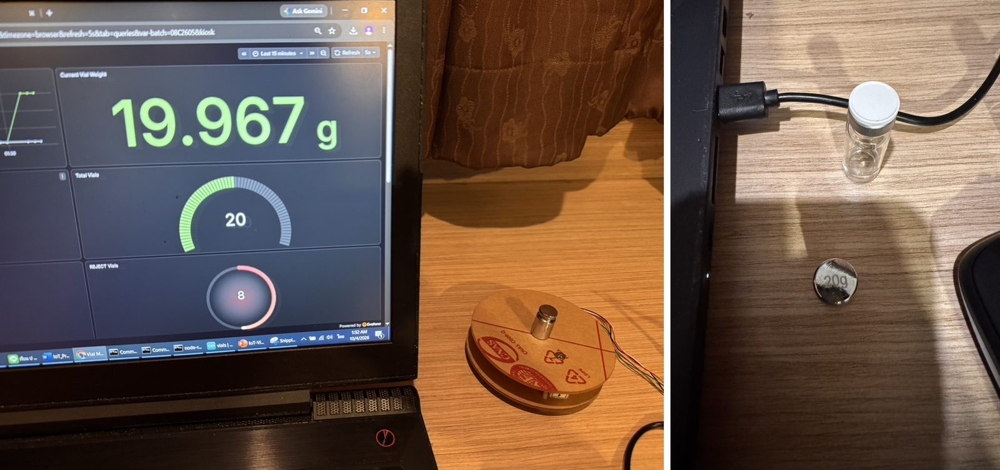

IoT-Based Gravimetric Fill-Volume Monitoring System for Pharmaceutical Vials
ระบบตรวจปริมาณการบรรจุขวดยา vial ด้วยการชั่งน้ำหนัก ESP32 อ่านค่าจาก Load Cell ส่งผ่าน MQTT ให้ Node-RED ตัดสิน NORMAL / LOW VOLUME เก็บทุกขวดลง InfluxDB 3 และแสดงผลบน Grafana แบบเรียลไทม์ ตรวจย้อนหลังได้ทุก Batch
ตัวอย่างจำลองบนหน้าเว็บ ไม่ใช่ข้อมูลสดจากอุปกรณ์ ตรรกะเดียวกับเฟิร์มแวร์: รอค่านิ่ง 3 sample แล้วเฉลี่ยก่อนตัดสิน
โรงงานยาส่วนใหญ่ยังสุ่มชั่งด้วยตาชั่งแยกและจดบันทึกด้วยมือ เครื่องตรวจอัตโนมัติมีราคาสูงและพบเฉพาะในโรงงานใหญ่
ขวดที่บรรจุต่ำหรือเกินมีโอกาสหลุดไปถึงผู้ป่วย
ไม่มีข้อมูลย้อนหลังไว้วิเคราะห์แนวโน้มคุณภาพของหัวบรรจุ
หัวบรรจุผิดปกติถูกพบหลังเกิดความเสียหายแล้ว แก้ไขไม่ทัน
ข้อมูลไหลครบทุกขั้นตอนในต้นแบบจริง Dashboard รีเฟรชทุก 5 วินาที และกรองข้อมูลตาม Batch/Lot ได้
อ่านน้ำหนักจาก Load Cell ต่อเนื่อง ตรวจการวาง/ยกขวด
publish vial/weightรับและกระจายข้อความ MQTT ในวง LAN
vial/status · retainจัดการ Batch, สร้าง vial_id, เช็กค่านิ่ง และตัดสินผล
NORMAL / LOW VOLUMEเก็บทุกขวดพร้อมเหตุผล reject ค้นด้วย SQL
HTTP write → 204Trend, Yield, PASS/REJECT, Firmware และสถานะอุปกรณ์
เว็บ + มือถือ// vial/weight { "weight_g": 5.757 } // vial/status (retained) { "device": "ESP32_VialScale", "firmware": "v1.1.0", "status": "ONLINE", "ip": "..." }

ใช้อุปกรณ์หาง่าย ราคาไม่แพง ฝั่งซอฟต์แวร์เป็น open source ทั้งหมด
| อุปกรณ์ | หน้าที่ | ราคา |
|---|---|---|
| ESP32 DevKit v1 | MCU มี Wi-Fi ในตัวHX711 DT → GPIO2 · SCK → GPIO4 | ฿180 |
| Load Cell 1 kg | เซนเซอร์วัดน้ำหนักละเอียดพอสำหรับพิกัด 0.65 mL | ฿120 |
| HX711 | ADC 24-bit สำหรับ Load Cell | ฿40 |
| แท่นชั่ง / สายไฟ / เคส | ยึดจับและลดสัญญาณรบกวน | ฿100 |
| Software stack | Mosquitto, Node-RED, InfluxDB 3, Grafana, ArduinoOTA | ฿0 |
| รวมฮาร์ดแวร์หลัก (ไม่รวม PC และตุ้มอ้างอิง) | ≈ ฿440 | |
ทดลองกับผลิตภัณฑ์ VACCINE_A ทุกขวดที่ REJECT ถูกบันทึกเหตุผล (reject_reason) ไว้ตรวจย้อนหลัง

ยังไม่ถึงเป้าหมาย ±0.01 g และ lower limit 5.786 g มาจากชุดข้อมูลขนาดเล็ก ต้นแบบนี้จึงเป็น academic prototype ต้อง calibrate และ validate เพิ่มก่อนใช้เป็นเกณฑ์ผลิตจริง

หลังรีสตาร์ต ESP32 ส่งเวอร์ชันใหม่ไปที่ vial/status แล้ว Grafana แสดง v1.1.0 + ONLINE อัตโนมัติ